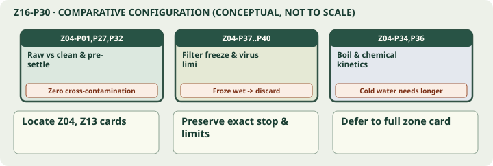

Z16-P30 · Field reference atlas · New manuscript
Water Filtration, Boiling and Disinfection Equipment Index
Locate the original encyclopedia cards for water Filtration, Boiling and Disinfection Equipment Index.
When it applies · Offline reference lookup. The linked chapter defines the situation, audience and limits.
Equipment · Offline reader or the complete linked source cards in print.

Actions
- Open Z04-P02 for turn acceptable snow into treated water; Z04-P34 for understand what pore-size filtration removes and what passes through.[A10, W01, W04]
- Open Z04-P37 for protect wet hollow-fiber and ceramic filters from freeze damage; Z04-P39 for disinfect clear water with unscented household chlorine bleach.[A10, W28, W01]
- Read the linked card’s applicability, equipment and stop conditions together. Keep review and source limitations attached to any excerpt.[A10, ED]
Failure recognition · Acting on a keyword or title while overlooking an upstream exception or stop condition.[A10, ED]
Verify · Confirm the exact page ID and read the full conditions before using the reference.[A10, ED]
Stop or change course · If the situation falls outside a linked card’s conditions or its stop rule applies, stop using this index as a decision aid. Follow the full card and current local directions.[A10, ED]
Evidence and editorial notes
- A10 · FEMA / Ready.gov · Make a Plan (current web edition)
- Section: Offline reader navigation, historical lineage, and HOLD transparency · Conditions: Using the complete 16-zone offline archive, zone readers, and print proofs
Support: Navigation aids expose draft status, reconstruction lineage, open diagnostic photo needs, and pending specialist holds on every lookup path.
Limitations: This index entry does not independently establish any safety, regulatory or diagnostic instruction. · Conflicting evidence: None noted.
Editorial note: Index design and cross-reference policy. Substantive directions come from linked upstream chapter claims. · Specialist reviewer: Accessibility, print QA, and editorial reviewer
Primary source · checked 2026-11-24 - W01 · CDC · How to Make Water Safe in an Emergency (2024-09-19)
- Section: Water with fuel or toxic chemicals in it · Conditions: Suspected fuel, toxic chemicals or radioactive contamination
Support: Use a different safe supply. Standard boiling and microbial disinfection do not make this water safe.
Limitations: Does not list contaminant-specific lab remediation; applies to emergency consumer decisions only. · Conflicting evidence: None across CDC/EPA emergency guidance.
Editorial note: Used as upstream hard-stop gate prior to any field treatment card. · Specialist reviewer: Drinking-water safety and public health
Primary source · checked 2026-11-24 - W04 · CDC · Water Treatment Options When Hiking, Camping, or Traveling (current web edition)
- Section: Water treatment methods > Filter and disinfect · Conditions: Untreated backcountry water; suitable devices and directions
Support: Filter capability varies. Filtering then disinfecting addresses gaps left by typical portable filters. Follow both manufacturers' directions.
Limitations: Effectiveness depends on pore rating, cartridge integrity, and manufacturer-verified test standards. · Conflicting evidence: None; consumer claims outside NSF/EPA standards are excluded.
Editorial note: Used to require multi-barrier pairing rather than relying on one filter alone. · Specialist reviewer: Drinking-water treatment specialist
Primary source · checked 2026-11-24 - W28 · Sawyer · Water Filtration FAQs (Current manufacturer FAQ)
- Section: Water filtration FAQ > filter freezing · Conditions: Sawyer wet hollow-fiber filters; other models follow their exact manufacturer instructions
Support: Freezing can damage a wetted filter. Sawyer advises replacing a filter suspected of freezing; visual inspection cannot establish its integrity.
Limitations: Do not extrapolate replacement or integrity-testing instructions to other products without their manuals. · Conflicting evidence: None; critical cold-weather filter failure mechanism.
Editorial note: Drives cold-weather filter protection and failure-recognition cards. · Specialist reviewer: Drinking-water treatment and cold-weather operations
Primary source · checked 2026-11-24
Source lineage · New manuscript (Z16 P20 equipment index) · Classification · New manuscript.